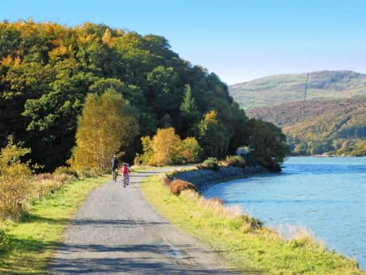
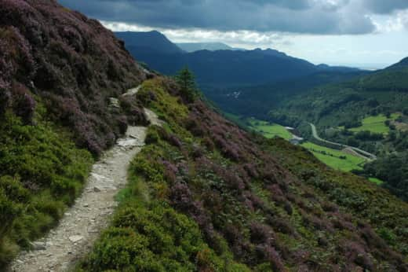
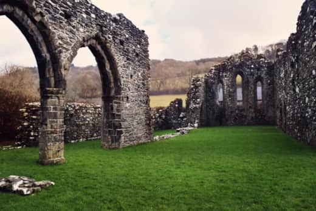
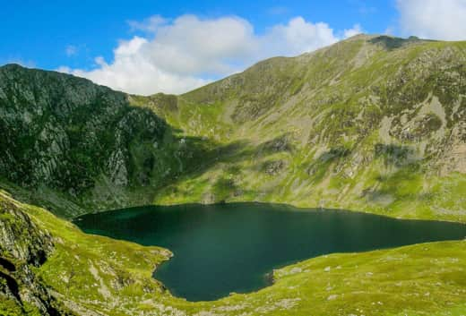
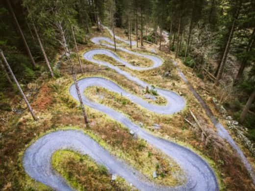
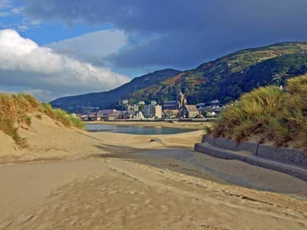
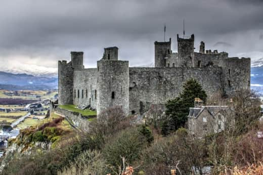
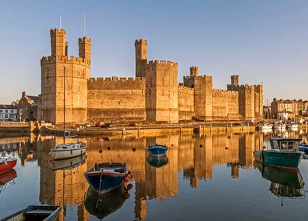
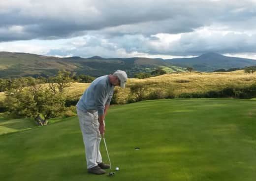
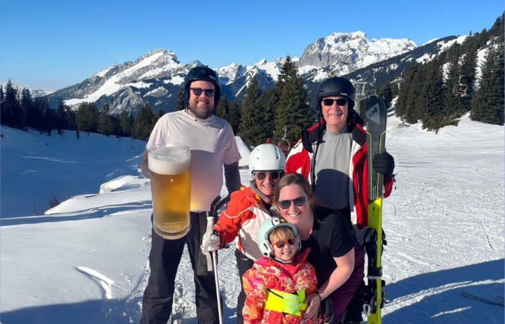

Mawddach Trail
1/4 mileThe Mawddach Trail runs about 8 miles through to Barmouth, boasting gorgeous scenery along the way. The flat path is ideal for walking or cycling.

Precipice Walk
3.1 milesOne of the most popular walks in southern Snowdonia, offering stunning 360-degree views from heights between 700-850 feet, looking down on the Mawddach River valley and Llyn Cynwch Lake.

Cymer Abbey
2 milesFoundered in 1158-9 and dedicated to the Virgin Mary, Cymer Abbey is a ruined Cistercian Abbey situated near the village of Llanelltyd, just north of Dolgellau.

Cadair Idris
7.5 milesWith three routes ranging 9-10km, Cadair Idris is the pride and joy of Dolgellau. Standing at 2,930ft with 5-6 hour treks, it's a beast of a mountain for experienced hikers.

Coed y Brenin
7 milesExplore beautiful walks and waterfalls between old gold mine ruins. A premier destination for mountain bikers with manmade single tracks and dual slalom courses.

Barmouth Beach & Harbour
9 milesA beautiful Blue Flag beach with sand dunes and crystal-clear water, alongside a charming harbour town featuring pubs, cafes, paddle boarding, and boat tours.

Harlech Castle
20.6 milesConstructed atop a spur of rock close to Cardigan Bay, this magnificent fortress was built by Edward I during his Welsh campaign between 1282 and 1289.

Caernarfon Castle
43.2 milesBuilt in the 1280s, Caernarfon Castle was the most expensive and elaborate fortress built by Edward I, renowned for its distinctive polygonal towers.

Bala Golf Course
18.2 milesTake on a unique challenge with this 10-hole course set roughly 1,000 feet above sea level, offering incredible panoramic views of Lake Bala and surrounding peaks.

Big beers
1800 milesSki and drink big beers!